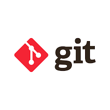
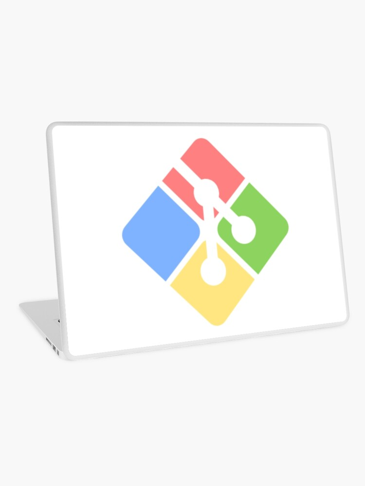

¿Qué es GitHub?
GitHub es una plataforma en línea que utiliza Git para gestionar proyectos de software. Permite a los desarrolladores almacenar y compartir su código con otros, colaborar y llevar un registro completo de las versiones del proyecto.

Una guía sobre cómo usar Git, GitHub y Git Bash para gestionar tu proyecto.
Git es un sistema de control de versiones distribuido, utilizado para llevar un seguimiento de los cambios en los archivos de un proyecto. Es fundamental en el desarrollo de software, especialmente cuando se trabaja en equipo.
GitHub es una plataforma en línea que utiliza Git para gestionar proyectos de software. Permite a los desarrolladores almacenar y compartir su código con otros, colaborar y llevar un registro completo de las versiones del proyecto.
Git Bash es una aplicación que emula la línea de comandos de Unix, permitiendo ejecutar comandos Git de forma eficiente en Windows. Es la interfaz que usamos para interactuar con Git de manera rápida.
git init para crear un repositorio en tu proyecto local.git add . para agregar todos los archivos de tu proyecto al área de preparación.git commit -m "Primer commit" para registrar el primer cambio.git remote add origin https://github.com/tuusuario/tu-repositorio.git.git push -u origin master para enviar los archivos a GitHub.Haz clic en el siguiente enlace para ver el código fuente y más detalles del proyecto:
Visitar Repositorio en GitHub